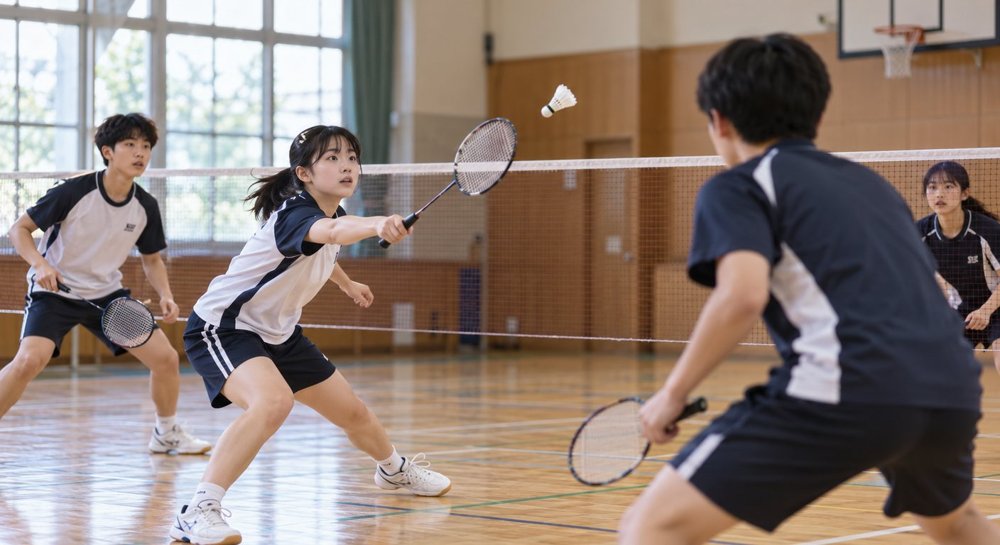
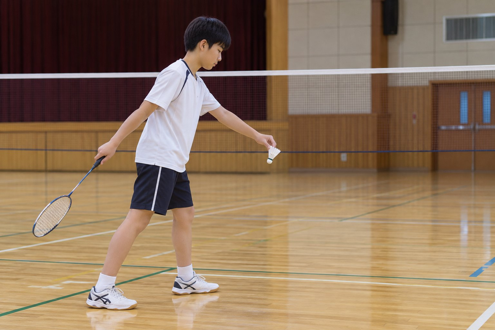
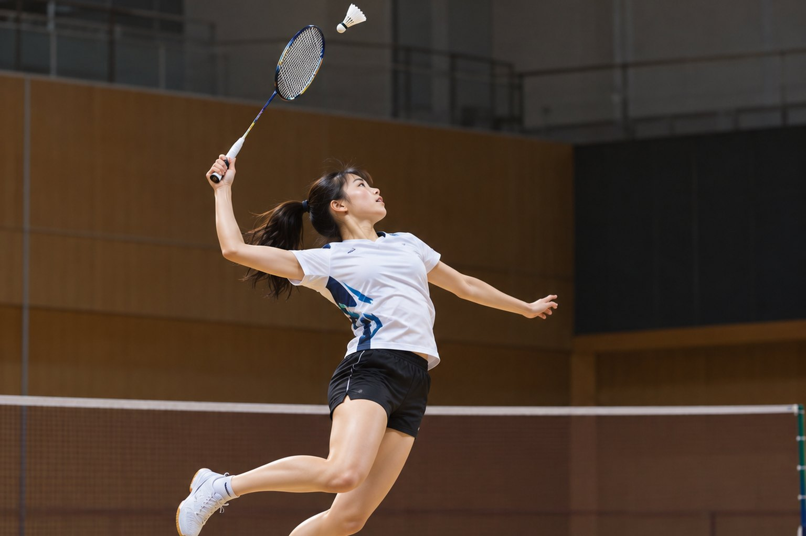

질문에 답하며 배우는 득점, 코트, 서브, 셔틀콕의 비행
이 학습지의 사진은 AI로 생성한 이미지입니다. → 키 또는 아래 버튼으로 넘어가요.
랠리에서 이기면 서브권과 상관없이 1점을 얻어요. 20대 20이 되면 2점 차가 날 때까지 계속하고, 29대 29가 되면 30점을 먼저 얻는 쪽이 이겨요.
코트를 눌러 셔틀콕이 떨어진 자리를 정해 보세요. (위에서 본 코트)
단식과 복식 코트에서 다른 점은 무엇일까요?
복식은 6.10m, 단식은 5.18m예요. 길이 13.40m는 같아요. 서브할 때는 복식의 뒤쪽 선이 뒤 경계선보다 76cm 안쪽으로 줄어요.
코트를 눌러 보세요. 선 위에 떨어지면 인이에요.
서브는 셔틀콕을 치는 순간 바닥에서 1.15m 이하여야 하고, 대각선 방향의 상대 서비스 코트로 보내요. 서브 동작 중에는 두 발이 바닥에서 떨어지면 안 돼요.

셔틀콕을 허리 아래 높이에서 쳐요.

그래프의 흰 점선은 공기저항이 없을 때, 주황 선은 실제 셔틀콕의 경로예요. (가로·세로 눈금 간격이 달라요)
셔틀콕은 가볍고 깃털이 넓게 펴져 있어서 공기저항이 아주 커요. 그래서 처음엔 빠르게 날다가 금방 느려지고, 내려올 때는 거의 수직에 가깝게 떨어져요.
몸을 띄워 가장 높은 곳에서 셔틀콕을 내리쳐요.
높은 곳에서 앞으로 칠수록 아래로 가파르게 꽂혀서 받아치기 어려워요. 그래서 점프해서 치는 거예요.
복식 경기에서 셔틀콕이 복식 옆선(바깥 선) 위에 떨어졌다.
선은 코트 안에 포함돼요. 선에 조금이라도 닿으면 인이에요.
서브하는 순간 셔틀콕이 바닥에서 1.3m 높이에서 쳐졌다.
서브는 바닥에서 1.15m 이하에서 쳐야 해요.
랠리 중에 선수의 라켓이 네트에 닿았다.
랠리 중에 라켓이나 몸이 네트에 닿으면 폴트예요.
셔틀콕이 네트 윗부분에 걸렸다가 상대 코트로 넘어가 떨어졌다.
네트에 걸렸다가 상대 코트로 넘어가면 그대로 경기가 이어져요.
스매시는 아래로 빠르게 오기 때문에 좌우로 나란히 서서 코트 폭을 나눠 막아요. 공격할 때는 앞뒤로 서서 앞쪽은 짧은 공, 뒤쪽은 스매시를 맡아요.
낮고 부드럽게, 상대 코트 앞쪽으로 보내요.